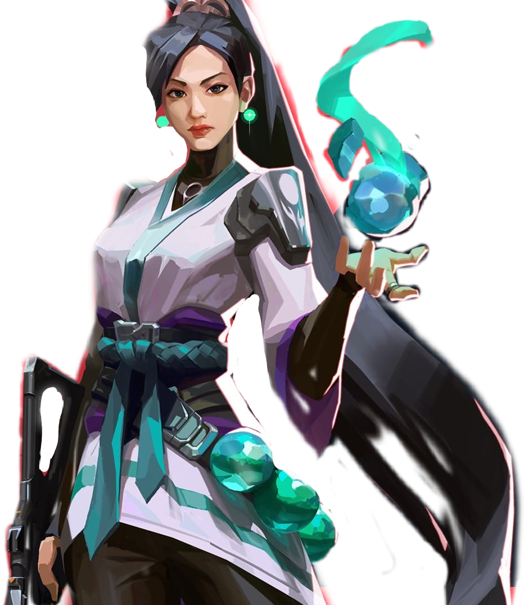
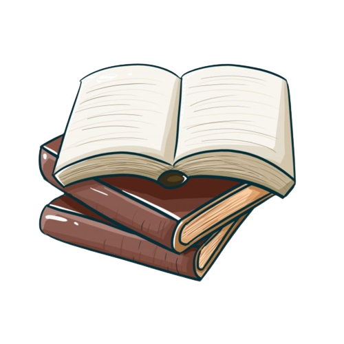
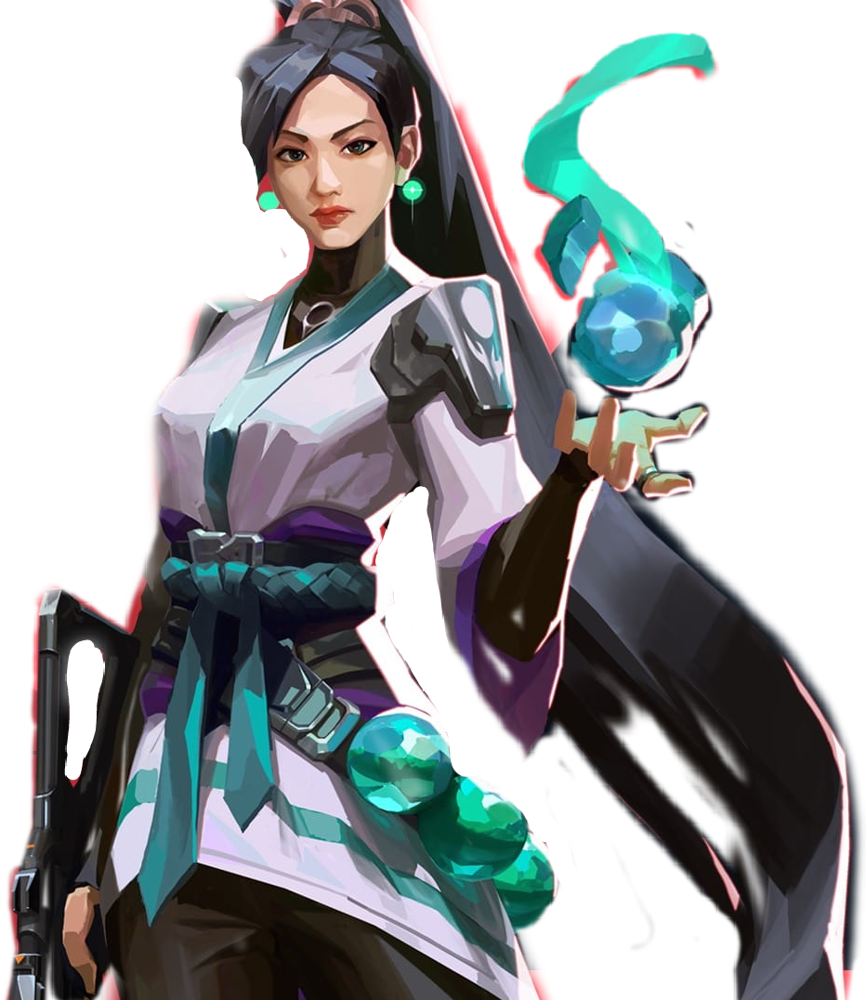
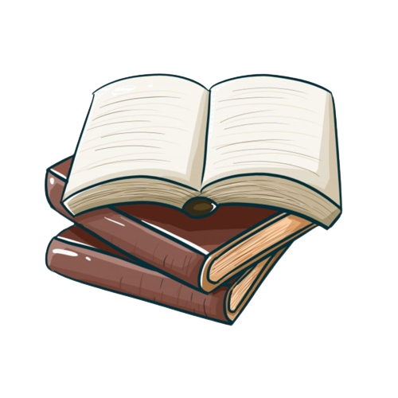

Songs

Otro Atardecer
Bad BunnyLetra
Aún quedan dos botellas de vino, de vino Por si se juntan nuestro' camino', camino' Y no hay que encontrar el atardecer Hay mucho de mí que te faltó conocer Si la vida me da de nuevo el placer Voy a volverte a besar como aquella vez que el sol se escondió Mientras la noche llegaba No sé qué sucedió Pero me perdí en tu mirada Eh-eh, eh-eh, eh-eh-eh-eh Oh-oh, mami, dime por qué te fuiste (dime), ey, ey Oh-oh, mami, dime qué tú me hiciste Que pasa el tiempo y no te olvido Búscame, ya estoy vestido Hoy sí o sí yo me quedo en un cuarto que no es mío Déjame acariciarte hasta quedarno' dormido' Yo haciéndote cosas nueva' y tú improvisando gemido' Eh-eh, eh-eh Tú a mí me gusta' más que el dinero, eh-eh-eh Quiero que te vengas tú primero A vece' me pregunto qué será de tu vida Ojalá un día de estos me escriba' Hey, you know I'm thinking 'bout you Please stay, 'cause I've been thinking 'bout you Vamo' suavecito, me besa' tan bien Empieza en mi ombligo, termina en mis pies Beni, no te olvido, yo te digo, no te fallaré No sé qué te hizo, pero yo nunca te dejaré Y no hay que encontrar el atardecer Hay mucho de mí que te faltó conocer Si la vida me da de nuevo el placer Voy a volverte a besar como aquella vez que el sol se escondió Mientras la noche llegaba No sé qué sucedió Pero me perdí en tu mirada, mirada
Yo No Soy Celoso
Bad BunnyLetra
Ey, ey El que esté libre de pecado que tire una piedra Y yo tiro un peñón, yo tiro un peñón Anoche soñé contigo y me levanté gruñón Bebiendo desde temprano, Dios me cuide el hígado y riñón, ey, ey, ey Extrañando toa' la' noche' de caviar y mignon Ahora eres de fuego como Olga Tañón, je Y en el cora me dejaste el Gran Cañón Tú y yo éramo' lo' Thunder y se rompió el equipo Ayer te vieron dizque en Fifty-Eight con otro tipo Yo también ando con una galla que con ella flipo Y no, no Yo no soy celoso, ¿pero quién e' ese cabrón? Dime quién e' ese cabrón Tranquila, no soy psycho No vo'a hacer un papelón, pero Auch, mi corazón Yo no soy celoso, ¿pero quién e' ese cabrón? Dime quién e' ese cabrón Tranquila, no soy psycho No vo'a hacer un papelón, pero Auch, mi corazón, eh Guau, sé que soy un caripelao, encojonao por eso Cuando con má' de mil he estao, ¿a cuántas no le' he dao?, eh Pero tranquila, que yo mismo me tengo amenazao Yo sé lo que tenía, lo que no sabía e' qué se sentía perderlo Si Beto lo enrola, voy a prenderlo; si traen perico, vo'a huelerlo El cora y la mente enredao, en el pecho tengo un dreadlo Enamorao por aquí, enamorao por allá Cupido, basta ya Te quiero pa mí na má', y eso e' egoísmo Me pongo celoso sin razón y eso es machismo, ey Un bofetón pa mí mismo Cogimo' vacacione' y no' fuimo' de turismo Por el Caribe probando nuevas táctica' Pero si vuelve' a la Antártica Yo no soy celoso, ¿pero quién e' ese cabrón? Dime quién e' ese cabrón Tranquila, no soy psycho No vo'a hacer un papelón, pero Auch, mi corazón Yo no soy celoso, ¿pero quién e' ese cabrón? Dime quién e' ese cabrón Tranquila, no soy psycho No vo'a hacer un papelón, pero Auch, mi corazón, eh
Dos Mil 16
Bad BunnyLetra
Bad Bunny, baby Eh-eh, eh-eh-eh La vida e' solo un momento Y el dinero no compra el tiempo Yo me acuerdo de tu talento Te estoy buscando y no te encuentro Dime, ¿qué tengo que hacer? ¿A dónde le tengo que caer? Pa pasar tres día' y dos noche' en el 2016 Ey, yo quiero darte por ley Dime, ¿qué tengo que hacer?, ey ¿A dónde le tengo que caer? Pa pasar tres día' y dos noche' en el 2016 Ey, yo quiero darte por ley Quisiera darle replay escuchando "Views" de Drake El lean y el vape (huh), la gorra Obey Una noche en el Mariott, otra en el Okay O en el parking de BK, ey Baby, extraño los polvo' al frente 'el parque Que me muerda', que me arañes, que me marque' Se acabaron los condone' en el minimarket Me fui acapella, uy, que Dios nos guarde De madrugada en tu cuarto, rulay, que no me pille tu pai Me vo' a esconder en el clóset en lo que se va tu mai Baby, tú ere' una OG kush desde que estaba en la high Ahora no sé na' de ti desde que dijiste: "bye, bye" Lo mejor que hiciste, tú ni sabes lo peor, ey, ey, ey La Isuzu ahora e' Lamborghini, dime si quiere' una ride, je Dime, ¿qué tengo que hacer? ¿A dónde le tengo que caer? (Dime) Pa pasar tres día' y dos noche' en el 2016 Ey, yo quiero darte por ley Dime, ¿qué tengo que hacer? ¿A dónde le tengo que caer? Pa pasar tres día' y dos noche' en el 2016 Ey, antes de que yo fuera un rey Ey, llama cuando él se vaya Si te ve conmigo, por ley se desmaya Qué rico me lo mama, nunca me lo guaya Hoy tengo party en Dizu, mañana en Aljibe y me quedo por Maya, ey Te vo' a dar con euforia, tú ere mi Zendaya Y yo me vo'a dar un shot por ti, espero que estés bien Yo he esta'o con mile' y tú sigue' en el top ten No me lo niegue', baby, que yo también, eh, eh Y yo me vo'a dar un shot por ti, espero que estés bien Yo he esta'o con mile' y tú sigue' en el top ten No me lo niegue', yo sé que yo también, ey Dime, ¿qué tengo que hacer? ¿A dónde le tengo que caer? Pa pasar tres día' y dos noche' en el 2016
Efecto
Bad BunnyLetra
Yeah-yeah-yeah-yeah-yeah-yeah Eh, eh-eh-eh No sé si es casualidad que yo me sienta así Siempre que tú estás cerquita de mí Dime qué me hiciste, qué droga me diste Que desde aquella noche no soy igual Tú me mira' y empiezo a sudar Siento que puedo volar Baby, la nota ya está haciendo efecto Mi mundo está jodío y me siento perfecto Porque estás tú aquí, moviéndote así, no pare' Baby, tú eres mi droga, esta noche no le baje' Porque la nota ya está haciendo efecto Mi mundo está jodío y me siento perfecto Porque estás tú aquí, moviéndote así, no pare' Baby, tú eres mi droga, esta noche no le baje' ¡Esta no, esta sí, esta no, esta sí! ¡Esta no, esta sí, esta no, esta sí! El gatito tuyo te perdió por negligencia Y yo que no creo en la abstinencia Esta noche en la cama va a haber turbulencia Qué rico tú mama', te vo'a dar la permanencia Ese totito e' la eminencia Pa darle tengo licencia Desde que fuimo' a Florencia Se puso más bicha, pero no pierde la esencia No, no, de Carola No, no, no, no anda sola No, no, no le diga' hola O va' a ser otro pa la cola, je Tu pirquete me mola Yo soy fan de esa popola Más las picky, las endo, la coca y la rola (más nada) Eres tú quien me controla, eh (je, je) En tus ojo' veo el mar, mami, llévame en tu ola Hoy me siento bien puta, repiola, ey Porque la nota ya está haciendo efecto Mi mundo está jodío y me siento perfecto Porque estás tú aquí, moviéndote así, no pare' Baby, tú eres mi droga, esta noche no le baje'
Neverita
Bad BunnyLetra
Yo estoy puesto pa' ti y tú te me quita' Diablo, qué piquete la chamaquita El corazón lo puso en la neverita Dice que este verano se queda solita Yo estoy puesto pa' ti y tú te me quita' Diablo', qué piquete la chamaquita El corazón lo puso en la neverita Dice que este verano se queda solita Pero nunca sola, sola Amores vienen y van, como las ola' El DM explotao, tos le escriben: "hola" Una fila'e cabrone' y yo quiero la cola, yeah, yeah, yeah Déjame untarte el sunblock pa' que no te queme Aquí hay mucha' nenas linda', pero tú la tiene' Jugar conmigo, eso te entretiene No sea' mala, me tienes de meme Me siento como el sol, ey, cuando te pones sunblock Baby, déjame entrar, dale, quítame el lock, ey Yo me la pasaría contigo viendo TikTok, je Déjame sorprenderte, ey Déjame untarte el sunblock pa' que no te queme Aquí hay muchas nenas linda', pero tú la tiene' Jugar conmigo, eso te entretiene No sea' mala', me tienes de meme Yo estoy puesto pa ti y tú te me quita' Diablo', qué piquete la chamaquita El corazón lo puso en la neverita Dice que este verano se queda solita Pero nunca sola, sola Amores vienen y van, como las ola' Tú lo que ere' e' una abusadora Vo'a buscarte una cerveza y bebe' el cora', yeah, yeah, yeah
Aguacero
Bad BunnyLetra
Ey, ey Me tienes el bicho ansioso Hey, ey Quédate en cuatro Que se ve precioso Ese culito e' un tramposo, ey Si abres una iglesia Me hago religioso Exquisito, delicioso Me la como y ni reposo, ey, ey Baby, lo nuestro es amistoso, je Pero si tú quieres Cuando sea soy tu esposo Okay (okay), sí, sí Encima de mí Fue que te conocí Ey, mami tú ere' así No te haga', yo también soy así Okay, sí, sí Encima de mí Fue que te conocí Ey, mami tú ere' así No te haga', yo también soy así Porque yo soy un cuero Y tú también Y tú también Si el calor es de noventa El aguacero es de cien Vamo' a pasarla bien Yo soy un cuero Y tú también, y tú también Si el calor es de noventa El aguacero es de cien Vamo' a pasarla bien Pero dale easy, easy, ey Que sabes que soy Pisci', ey Y enamorarme es bien fácil, ey Pero olvidarme es difícil Mami, dale easy, easy, ey Que sabes que soy Pisci', je Y enamorarme es bien fácil, ey Pero olvidarme es difícil Y nadie se ha enterado To' los mensajes archivado' La baby estudió psicología Y conmigo hizo el doctorado Me tienes desquiciado Ey, tú me prendes como fosforo Contigo hasta en lo' semáforo', ey Yo no sé qué opina el horóscopo, no Pero pichea, ven y pártele Corriendo Can-Am Está encadena' en la orilla Vo'a buscarme novia Pa' que tú seas mi chilla, ey Te gusta ir a la milla, ey "Baby, úsame", decía' Si quieres madrugo Pa' hacértelo temprano En lo que acaba el verano To's dicen que ese culo lo hizo el cirujano Y fue Diosito, con sus propias mano' Ey, ey, ey Siempre te doy con los troyano', ey, ey Si preguntan, di que somos primos lejano' Jaja, ey, ey, jaja, ey Tranquila, no te vo'a decir "Te amo", nah, nah Porque yo soy un cuero Y tú también, y tú también Si el calor es de noventa El aguacero es de cien Vamo' a pasarla bien Porque yo soy un cuero Y tú también, y tú también Si el calor es de noventa El aguacero es de cien Vamo' a pasarla bien Pero dale easy, easy, ey Que sabes que soy Pisci', ey Y enamorarme es bien fácil, ey Pero olvidarme es difícil, ey
Moscow Mule
Bad BunnyLetra
Si yo no te escribo Tú no me escribe', ey Si tú quieres, te busco Yo sé dónde tú vive' Quizá hoy está aborreci'a Pero por dentro tú tiene' alegría Si quieres te la saco Dos trago' y sabes Que me pongo bellaco No somo' na' Pero estamo' envuelto' hace rato WhatsApp sin el retrato No guarda mi contacto (ey, ey, ey, ey) Pero se la saco Dos trago' y sabes Que me pongo bellaco No somo' na' Pero estamo' envuelto' hace rato, oh-oh WhatsApp sin el retrato No guarda mi contacto-to Todo e' underwater Baby, vamo' pa'l cuarto quarter En la Uru' comiéndono' el pâté Te vo'a dar duro pa' que no me compare' Ey, cuidao' con ese mahón Que se va a romper (ey) Ese booty lo va a romper (ey) Yo no sé si yo te vuelvo a ver Si mañana me vo'a perder Tú ere' una player Me hiciste un crossover Esta ve' metiste Me diste game over, eh, eh Porque no puedo olvidar El perreo aquel Que se fue viral Dime si mañana te va' a quedar Después de la alarma te lo voy a dar Ey, hoy tú no va' a trabajar, je, no Si quieres te la saco Dos trago' y sabes Que me pongo bellaco No somo' na' Pero estamo' envuelto' hace rato WhatsApp sin el retrato No guarda mi contacto Pero se la saco Dos trago' y sabes Que me pongo bellaco No somo' na' Pero estamo' envuelto' hace rato WhatsApp sin el retrato No guarda mi contacto Me gustan así Piquetúa Mami, qué rica te ve' 'esnu'a Quizás no sentiste lo que yo sentí Pero aún te debo una noche en la suite Pa' darte tabla Dale, mami, habla Tú ere' una diablona No te haga' Pa' darte tabla Dale, mami, habla Tú ere' una diablona No te haga' No, no, no, no (no, no, no, no) No, no, no, no (no, no, no, no) No, no, no, no (no, no, no, no) Ey, yo no sé tú Pero yo quisiera amanecer 'esnu' En una playa por Balí, si no, Cancún Pide otro Moscow Mule (ey) Que ando en nota, nota Ven y choca Conmigo que se joda Baby, tú 'tás grandota Pero hoy ando en nota, nota Ven y choca Conmigo que se joda, eh Que se joda, ey Mami, tú quieres perreo Tú quieres perreo Tú quieres bellaqueo Tú quieres bellaqueo Mami, tú quieres perreo Tú quieres perreo Tú quieres bellaqueo
Después de la Playa
Bad BunnyLetra
Yeah-yeah, yeah-yeah, yeah-yeah, eh Ja-ja Eh-eh, eh-eh, eh Tú dices que no me atrevo Si supieras que yo ando a fuego Dime qué tú juega' y yo lo juego No lo dejemo' pa luego, no Que la luz ya se fue Y la noche llegó, ey Quiero saber si usted Quiere lo mismo que yo Dime pa dónde vamo' después de la playa Si nos secamo', yo traigo la toalla Y de nuevo nos mojamo', pero en mi cama Te vo'a dar tabla de surfear, yeah Dime pa dónde vamo' después de la playa Si nos secamo', yo traigo la toalla Y de nuevo nos mojamo', pero en mi cama Te vo'a dar tabla de surfear, bebé Dime, ¿vamo' pa'l mambo o no vamo' pa'l mambo? Tú me dice', mami ¡Zumba! ¿Qué? Ey, ey, ey Hoy sí que sí, ¡ah! Dime pa dónde vamo' después de la playa Si nos secamo', yo traigo la toalla Y de nuevo nos mojamo', pero en mi cama Te vo'a dar tabla de surfear, bebé Mami, tú vive' lejo' (¿qué?) Pero como quiera', yo vo'a buscarte Porque tú 'tas buena y te lo merece' (tú 'tas rica) Al frente'l mar es que yo quiero darte Pa que se pongan contento' to' los pece' Y tú estás mojá', yo estoy ready pa' surfearte (yo estoy ready) Tranquila, que yo sé que esto e'a vece' (normal) La otra ve' en la playa te emborrachaste (¿cómo fue?) Y pediste que te bese, yeh ¿Cómo? Ey, ey, ey, ey, ey, ey, ey, ey ¡Prende eso, prende eso, prende eso! ¿Cómo? Ando con el apechao Que no me llame nadie hoy, ¿okay? Me lo vo'a beber to (¡ja!) Ey, to el mundo borracho bailando en la playa Sintiendo el calor, sintiendo el calor Tú llevas rato mirando y mirando Pégate mejor, pégate mejor De esa chapa se habla en toa' las barbería' Y en el colmadón, y en el colmadón (¿cómo?) Ey, tu novio se cree Romeo y yo le vo'a hacer como Don Le vo'a hacer como Don, ¿qué, qué, qué? Salí con tu mujer Ya Dio' me perdonó, falta' tú ¿Qué, qué, qué? 'Toy borracho, borracho Ey, ey, ey, ey, ey, ey ¿Qué tú dice' de esto? No le vo'a bajar, ¿okay? No le baje', no le baje' Ah, ah, ah, ah, ah, ah, ah (¿cómo?) Ey, ey, ey, ey, ey ¡Qué gozadera! (Ey, ey, ey, ey, ey) que no se apague Ey, ey, ey, ey ¿Pa'ónde vamo'?, ¿pa'ónde vamo'?, dime, despué' de aquí Mira ¿Y este cabrón quién e'? Que está cogiendo cerveza en la neverita, tú, eh ¿Anda con nosotro'? Ah, okay, okay, okay, okay, dale
Me porto Bonito
Bad BunnyLetra
Yeah-yeah-yeah-yeah-yeah-yeah, ey En la guagua se quedó el olor De tu perfume Tú ere' una bellaca, yo soy un bellaco Eso e' lo que no' une Ella sabe que está buenota Y no la presumen Si yo fuera tu gato Subiera una foto los vierne' y los lune' (so) Pa' que to' el mundo vea Lo rica que tú está', que tú está' Contigo tengo que apretar Y en la calle ando suelto Pero por ti me quito Si tú me lo pides Yo me porto bonito Y subo un selfie pa' que vean Lo rica que tú está', que tú está' Las otras tienen que apretar En la calle ando suelto Pero por ti me quito Si tú me lo pide' Yo me porto bonito Ey, ey Tú no ere' bebecita Tú ere' bebesota Frikitona, ma', se te nota Le gustan los trío' Cuando está en la nota Si el novio no sirve De una lo bota Y waoh, mami Dime dónde dejo el resume Sé que te dejaste hace un me' Y de una de pecho me zumbé Si quiere' te hago un bebé O te traigo la' Plan B Uff, mami, qué rica tú te ve' Pa' los 2000 escuchaba RBD Y ahora quiere perreo Toa' la noche en la pared Te obsesiono, CBD Mami, tú ere' élite No te me limite' Déjame hacerte Lo que amerite y te levite Dale pa'l escondite No te me arisque' Que aquí no van a poder llegar lo' satélite' Mami, sube algo Dame contenido Ese culo súbelo má' seguido Me paso jangueando A ver si coincido, ey Y por fin doy contigo Mai, nuestra' bellaquera' Nunca la' olvido Ninguna como tú A mí me ha complacido Tú cree' que a toda' Siempre les digo lo mismo Quiere chingar Pero no quiere na' fijo, ey Pero en confianza me confiesa Dice que nadie le interesa Pero cuando sale, se pone traviesa (ey) Pa' que to' el mundo vea Lo rica que tú está', que tú está', ey Contigo tengo que apretar Y en la calle ando suelto Pero por ti me quito Si tú me lo pide' Yo me porto bonito
Tití Me Preguntó
Bad BunnyLetra
Ey, Tití me preguntó Si tengo muchas novia' Muchas novia' Hoy tengo a una, mañana otra Ey, pero no hay boda Tití me preguntó Si tengo muchas novia' Je, muchas novia' Hoy tengo una, mañana otra Me la' vo'a llevar a to'a Pa' un VIP, un VIP, ey Saluden a Tití Vamo' a tirarno' un selfie Say "Cheese", ey Que sonrían las que ya les metí En un VIP, un VIP, ey Saluden a Tití Vamo' a tirarno' un selfie Say "Cheese" Que sonrían las que ya se olvidaron de mí Me gustan mucho las Gabriela Las Patricia, las Nicolle, las Sofía Mi primera novia en kinder, María Y mi primer amor se llamaba Thalía Tengo una colombiana Que me escribe to' los día' Y una mexicana que ni yo sabía Otra en San Antonio que me quiere todavía Y las de PR que todita' son mía' Una dominicana que es uva bombón Uva, uva bombón La de Barcelona que vino en avión Y dice que mi bicho está cabrón Yo dejo que jueguen Con mi corazón Quisiera mudarme Con todas pa' una mansión El día que me case te envío la invitación Muchacho, deja eso, ey Tití me preguntó Si tengo muchas novia', muchas novia' Hoy tengo una, mañana otra Ey, pero no hay boda Tití me preguntó Si tengo muchas novia' Ey, ey, muchas novia' Hoy tengo una, mañana otra (mañana otra) (rrra) Tití me preguntó-tó-tó-tó-tó-tó-tó Tití me preguntó-tó-tó-tó-tó-tó-tó (qué pámpara) Tití me preguntó-tó-tó-tó-tó-tó-tó Tití me preguntó-tó-tó-tó (Pero ven acá, muchacho ¿Y para qué tú quiere' tanta' novia'?) Me la' vo'a llevar a to'a Pa' un VIP, un VIP, ey Saluden a Tití Vamo' a tirarno' un selfie Say "Cheese", ey Que sonrían las que ya les metí En un VIP, un VIP, ey Saluden a Tití Vamo' a tirarno' un selfie Say "Cheese" Que sonrían las que ya se olvidaron de mí Oye, muchacho 'el diablo, azaroso Suelta ese mal vivir Que tú tiene' en la calle Búscate una mujer seria pa' ti Muchacho 'el diablo, coño Yo quisiera enamorarme Pero no puedo Pero no puedo, eh, eh Yo quisiera enamorarme Pero no puedo Pero no puedo Sorry, yo no confío, yo no confío Nah, ni en mí mismo confío Si quieres quedarte Hoy que hace frío Y mañana te va', nah Muchas quieren mi baby gravy Quieren tener mi primogénito, ey Y llevarse el crédito Ya me aburrí Hoy quiero un totito inédito, je Uno nuevo, uno nuevo, uno nuevo, uno nuevo (ey) Hazle caso a tu amiga Ella tiene razón Yo vo'a romperte el corazón Vo'a romperte el corazón Ey, no te enamores de mí No te enamores de mí Sorry, yo soy así, ey No sé por qué soy así Hazle caso a tu amiga Ella tiene razón Yo vo'a romperte el corazón Vo'a romperte el corazón No te enamores de mí No te enamores de mí Sorry, yo soy así Ya no quiero ser así, no
Un Ratito
Bad BunnyLetra
Ey, Tití me preguntó Si tengo muchas novia' Muchas novia' Hoy tengo a una, mañana otra Ey, pero no hay boda Tití me preguntó Si tengo muchas novia' Je, muchas novia' Hoy tengo una, mañana otra Me la' vo'a llevar a to'a Pa' un VIP, un VIP, ey Saluden a Tití Vamo' a tirarno' un selfie Say "Cheese", ey Que sonrían las que ya les metí En un VIP, un VIP, ey Saluden a Tití Vamo' a tirarno' un selfie Say "Cheese" Que sonrían las que ya se olvidaron de mí Me gustan mucho las Gabriela Las Patricia, las Nicolle, las Sofía Mi primera novia en kinder, María Y mi primer amor se llamaba Thalía Tengo una colombiana Que me escribe to' los día' Y una mexicana que ni yo sabía Otra en San Antonio que me quiere todavía Y las de PR que todita' son mía' Una dominicana que es uva bombón Uva, uva bombón La de Barcelona que vino en avión Y dice que mi bicho está cabrón Yo dejo que jueguen Con mi corazón Quisiera mudarme Con todas pa' una mansión El día que me case te envío la invitación Muchacho, deja eso, ey Tití me preguntó Si tengo muchas novia', muchas novia' Hoy tengo una, mañana otra Ey, pero no hay boda Tití me preguntó Si tengo muchas novia' Ey, ey, muchas novia' Hoy tengo una, mañana otra (mañana otra) (rrra) Tití me preguntó-tó-tó-tó-tó-tó-tó Tití me preguntó-tó-tó-tó-tó-tó-tó (qué pámpara) Tití me preguntó-tó-tó-tó-tó-tó-tó Tití me preguntó-tó-tó-tó (Pero ven acá, muchacho ¿Y para qué tú quiere' tanta' novia'?) Me la' vo'a llevar a to'a Pa' un VIP, un VIP, ey Saluden a Tití Vamo' a tirarno' un selfie Say "Cheese", ey Que sonrían las que ya les metí En un VIP, un VIP, ey Saluden a Tití Vamo' a tirarno' un selfie Say "Cheese" Que sonrían las que ya se olvidaron de mí Oye, muchacho 'el diablo, azaroso Suelta ese mal vivir Que tú tiene' en la calle Búscate una mujer seria pa' ti Muchacho 'el diablo, coño Yo quisiera enamorarme Pero no puedo Pero no puedo, eh, eh Yo quisiera enamorarme Pero no puedo Pero no puedo Sorry, yo no confío, yo no confío Nah, ni en mí mismo confío Si quieres quedarte Hoy que hace frío Y mañana te va', nah Muchas quieren mi baby gravy Quieren tener mi primogénito, ey Y llevarse el crédito Ya me aburrí Hoy quiero un totito inédito, je Uno nuevo, uno nuevo, uno nuevo, uno nuevo (ey) Hazle caso a tu amiga Ella tiene razón Yo vo'a romperte el corazón Vo'a romperte el corazón Ey, no te enamores de mí No te enamores de mí Sorry, yo soy así, ey No sé por qué soy así Hazle caso a tu amiga Ella tiene razón Yo vo'a romperte el corazón Vo'a romperte el corazón No te enamores de mí No te enamores de mí Sorry, yo soy así Ya no quiero ser así, no
Tarot
Bad BunnyLetra
Verte en el VIP de lejito e' un privilegio Baby, tú ere' un mito, ese culito e' un misterio Tú loquita porque te cojan y yo que me coja' en serio Y a Dios le vo'a pedir que te lo explique Que tú estás muy dura, tú tienes el pique No te sorprenden to' estos bobo' con ticket Tú lo quе quiere' es quе te chi- Ojalá y tenga suerte Porque no cualquiera puede llegarte Pero yo voy a mí, pa' que hoy tú me la suelte Tienes la disco de museo, ma', tú ere' arte Y yo pagué, pa' verte Y va a gustarte To' lo que quiero hacerte, eh Hoy tengo que hablarte Tienes la disco de museo, ma', tú ere' arte Ojalá y tenga suerte Eh-eh, ey Si subiste una story es pa' que te lo comenten Si te mandé un fueguito es que me tiene' caliente Tú estás dura de espalda y más rica de frente, eh-eh Mami, yo le llego al oeste, je Si es pa' darte este, ey Baby, yo quiero darte las buena' noche pa' que te acueste' Y si se da al fin, nos vamo' de aquí Ojalá diga' que sí y vamo' a darle Que anda bonita y suelta, bonita y suelta Se dejó del gato y tiene cinco de repuesto Yo quiero saber con qué panticito te acuesta' Baby, dime si tú 'tas puesta Ojalá y tenga suerte Porque no cualquiera puede llegarte Pero yo voy a mí, pa' que hoy tú me la suelte' Tienes la disco de museo, ma', tú ere' arte Yo pagué pa' verte Y va a gustarte To' lo que quiero hacerte, eh Hoy tengo que hablarte Tienes la disco de museo, ma', tú ere' arte Ojalá y tenga suerte Pa' ganarte Y por más que me ignora, está imposible ignorarte El sol al la'o tuyo no es tan brillante Yo soy Da Vinci y tú mi obra de arte Tú ere' arte Porque tu flow, Dios lo bendiga Llega y to'as las babie' te ligan Abdominale' y sin hacerte la barriga Tu ex todavía te hostiga Porque tú 'tas cotizá' To'as las marca actualizá' Baby, si fuera cristiano, hoy te fueras bautizá' Quítate to', que ya te la quiero ver Que tú 'tas trending sin tenerte que joder Vente conmigo, nos podemo' beber A ti te va a correr Ojalá y tenga suerte Porque no cualquiera puede llegarte Pero yo voy a mí pa' que hoy tú me la suelte' Tienes la disco de museo, ma', tú ere' arte Y yo pagué pa' verte Y va a gustarte To' lo que quiero hacerte, eh
La corriente
Bad BunnyLetra
Baby, dame la señal Si me sigues mirando así Te vo'a besar, te vo'a besar (te vo'a besar) Si es contigo no lo tengo que pensar (no, no) Porque tú no eres como otra', no Tú eres diferente (eh, eh) Viviendo la vida loca Siempre en contra 'e la corriente Tú hace' lo que a ti te dé la gana Gana, ah ah Siempre pichea', meno' si el perreo llama Llama, ah, ah, ah (ey, ey) Quiero que tú me enseñe' Que sea' mi teacher, jeje Una bitch, una pitcher, ey Lowkey, anda a switche, je Loca que me la chi, Ey, ey, la baby ya va pa' treinta Y se ve violenta, se ve violenta Hace rato está mirando Me di cuenta, ya me di cuenta Ella sabe má' que tú Así que no sea' tonto Chico, no le mienta', je No te vivas la película Que ella es la película Y de las que no se renta Sube ese culo y to's comentan Una bad bitch, girl de lo' 90 Esa carita agridulce es lo que me tienta Una picky, una menta Pa' mamártela y rompértela Bajo pa' tu cancha y watchartela Si tu amiga quiere, ve, invítala Ve, invítala, que se va a hacer Pero yo no quiero a otra, no Tú eres diferente Si tú fuera' una ola Pues que me lleve la corriente Tú hace' lo que a ti te dé la gana Gana, ah, ah, ah, ah Siempre pichea, meno' si el perreo llama Llama, ah, ah, ah (ey) Tú eres de las que sale Tarde en la noche Pero sin dejarse ver (no, no) Se dejó y no va a volver (nah, nah) Ahora está mejor soltera Sale sin hora de llegada, no le dicen nada Hace lo que quiera (hace lo que quiera) La calle prendi'a en candela (ey, ey) Y antes de enfangarse Prefiere a solas acostarse, eh, eh Parece colombiana Le dicen "La parce" No necesita un hombre Pa' ti hay que buscarse Ella se la vive bailando, oh, oh Tiene a to' la disco mirando, eh, eh Porque tú no eres como otras, no Tú eres diferente (ey, ey) Viviendo la vida loca (Viviendo la vida loca) Siempre en contra la corriente (ey, ey) Tú hace' lo que a ti te dé la gana Gana, ah, ah, ah Siempre pichea', meno' si el perreo llama Llama, ah, ah, ah Yeah, yeah, ey, je Bad Bunny, baby Be-be-be-bé, jaja Ey, ey, Tony Dize Tony Dize, je La melodía con la calle La melodía con la calle Bad Bunny, baby, be, be, brrum Ey, ey
Party
Bad BunnyLetra
Yeah, dice Ra-Rauw Ella lleva un tiempo soliá Pero en las redes no sube nada, ah-ah Me pone a maquinear-a-ar Hoy quiere fluir, cansada de pensar, ay Enrola y va a quema-a-ar (ey) Hoy se quiere soltar, no quiere amarrarse, solo quiere Party, party, party, party Party, party, party, party Party, party, party, party Party, party, party, pa-pa-pa-pa- Party, party, party, party Party, party, party, party Party, party, party, party (yeh-yeh-yeh-yeh) Party, party, party, party (ey) Se miró al espejo y vio que está buenota, vio que está buenota Y quiere perreo y coger una nota Yo te azoto esa nalgota Cuando tú quiera puesto pa tu' bellaquera' Y perreártela la noche entera Solo abren la cartera, nos fuimos sin que nadie viera Baby, qué afrentá, tú quieres con dos y no sé si va' a aguantar Tanto asiento que hay y encima de mi bicho es que te quieres sentar Te tengo el toto sentimental Uh, el panty mojado, la nota en alta, no me ha bajado Dice que está soltera y todavía no se ha dejado Y que se atreve con Benito y con Rauw, je Tú me gustas par, me gustas par Salimos de Threehouse, nos fuimos pa Ocean Park Corriendo Can-Am, bebiendo champán Mañana te compro un Taycan Ey, ey, tú te mueves rico como las de E11EVEN Sabe que está rica y se da guille porque puede Yo estoy puesto, tú estás puesta, y, ¿quién se atreve? Dime quién se atreve, que en el hotel va a ser el after Party, party, party, party Party, party, party, party Party, party, party, party Party, party, party, pa-pa-pa-pa- Party, party, party, party Party, party, party, party Party, party, party, party Party, party, party, party (Ra-Rauw) Un bellaqueo bien nasty El culo real, pero las tetas son plastic Tiene un abdomen, parece que hace fasting Pero cuando come, se lo traga, no lo mastic, ey Ahora es full-time, 40 horas de sateo Guiliando los four track, le gusta el maleanteo Lo dejó atrás, a su ex le bajó el dedo Ella pide el zorro y el conejo en un perreo Dime si tú quieres dulce De fugao' nos perdimos en Santurce En la disco que apaguen las luces Que esas nalgas son pa que las use De ti yo me dejo que abuses Tú me tienes en un bucle Antes de que entre, lo escupe (mami) La puse a brincar y en la cama hicimos un Party, party, party, party Party, party, party, party Party, party, party, party Party, party, party, pa-pa-pa-pa- Party, party, party, party Party, party, party, party Party, party, party, party Party, party, party ¡Ja, ja, ja, ja, ja, ja! Uy, disfrutando la noche y muchas cosas bellas Todos son santos cuando hablan de los pecados ajenos ¡Uy, ja, ja, ja, ja, ja! Ay, ay, la vida ¿Quién entiende estas cosas? ¿Quién la entiende? ¡Uy, ja, ja, ja, ja, ja!
Enséñame a Bailar
Bad BunnyLetra
Yeh-yeh-yeh-yeh-yeh-yeh-yeh Eh, eh, eh, eh-eh-eh-eh, eh Tú y yo, yo y tú nos llevamos bien ¡Ja, ja, ja! Tú y yo, yo y tú nos llevamos bien ¿Qué lo qué?, je, dame lu', yo sigo tus pies A donde vayas, te sigue la luna (sigue la luna) Tú eres mi gyal ya, como tú ninguna Ey, la noche está buena, qué rico se pasa en Quisqueya, eh, eh Mi corazón no es de arena, pero tú 'tás dejando tus huella', eh, eh Cada vez que me miras, sin parar de mover las cadera', eh, eh Esto aquí no termina, nos fuimos rollin' la noche entera, eh, eh Y enséñame a bailar, mami, yo no sé (no sé) Pero ya estoy borracho y son las 03:00 (son las 03:00) Yo quiero ver contigo el amanecer Tú y yo, solito', y el sol Tú y yo, solito', y el sol Ey, si me dejas, te hago todo lo que a ti te gusta (a ti te gusta) Ey, rompe to' que yo pago, esa vaina no me asusta, eh, eh Si tú te tardas, te beso primero (te beso primero) Pórtate mala, dale, ponte cuero Que nadie se va a enterar, no, no, no pares de bailar, eh-eh Nadie le va a llegar a lo de nosotro', esto e' má' allá, eh, eh Si tú te tardas, te beso primero (te beso primero) Pórtate mala, dale, ponte cuero Y enséñame a bailar, mami, yo no sé (no sé) Pero ya estoy borracho y son las 03:00 (son las 03:00) Yo quiero ver contigo el amanecer Tú y yo, solito', y el sol Tú y yo, solito', y el sol Y enséñame a bailar, mami, yo no sé (no sé) Pero ya estoy borracho y son las 03:00 Yo quiero ver contigo el amanecer Tú y yo, solito', y el sol Tú y yo, solito', y el sol Oh-oh, empty my pocket, spend all my money Give you loving and doll, ah-ah Empty my pocket, spend all my money Give you something on top, yeh-yeh Empty my pocket, spend all my money Give you loving and doll, ah-ah Empty my pocket, spend all my money Give you something on top
Ojitos Lindos
Bad BunnyLetra
Hace mucho tiempo le hago caso al corazón Y pasan los día', los mese' pensando en tu olor Ha llegado el tiempo para usar la razón Ante' que sea tarde y sin querer me parta en do' Antes de que salga el sol y hunda el acelerador Que vaya sin frenos y pierda el control Nada más seremos do', tú y yo acariciándono' En medio del tiempo, sin decir adiós Y solo mírame con esos ojito' lindo' Que con eso yo estoy bien Hoy he vuelto a nacer Hacе tiempo que no agarro a nadie de la mano Hace tiempo que no envío: "buenos días, te amo" Pero tú me tiene' enredao, me envolví Iba por mi camino y me perdí Mi mirada cambió cuando tus ojos ví Bye-bye a los culo', ni me despedí Yo no te busqué, no Chocamo' en el trayecto Con tu alma es la que yo conecto Tranquila, no tiene que ser perfecto, no Aquí no existe el pecado Y equivocarse es bonito Los errore' son placere' Igual que to' tus besito' Y solo mírame con esos ojito' lindo' Que con eso yo estoy bien Hoy he vuelto a nacer Y solo mírame con esos ojito' lindo' Que con eso yo estoy bien Hoy he vuelto a nacer Tú y yo, tú y yo, tú y yo (tú y yo, tú y yo) Tú y yo, tú y yo (tú y yo, tú y yo), tú y yo Tú y yo, tú y yo Tú y yo, tú y yo Yo no me dejo llevar de nadie Yo solo me dejo llevar de tu sonrisa Y del lunar cerquita de tu boca Si yo estoy loco, tú estás loquita Pero, baby, como tú no hay otra, no Quiero regalarte girasole' Ir pa la playa y buscarte caracole' Cuando estoy contigo, yo no miro el Rolex Vamo' a bailar 200 cancione' Nadie me pone como tú me pone' Mmm, mm-mm, mmm Mmm, mm-mm, mmm Yo le hablo a Dio' y tú ere' su respuesta Aprendí que los momento' lindo' nunca cuestan Como cuando me regalas tu mirada Y el sol, su puesta (ey, ey), y el sol, su puesta Cuando estoy encima de ti, de ti Mami, yo me olvido de todo, de todo No hace falta nadie aquí Solamente tú y yo Antes de que salga el sol y hunda el acelerador Que vaya sin frenos y pierda el control Nada más seremos do', tú y yo acariciándono' En medio del tiempo, sin decir adiós Y solo mírame con esos ojito' lindo' Que con eso yo estoy bien Hoy he vuelto a nacer Y solo mírame con esos ojito' lindo' Que con eso yo estoy bien Hoy he vuelto a nacer
El Apagón
Bad BunnyLetra
Puerto Rico está bien cabrón, ey Está bien cabrón De Carolina salió el reggaetón Y los hijo' de puta de Bayamón (tú sabe) Ey, ey Quiere montarse en la ola y no han ido a Rincón Un besito pa' abuela en el balcón Cogiendo to' lo hoyo, en la Rubicon P fuckin' R, ey Tierra de Maelo y Tego Calderón Y de Barea, el que fue campeón, ja Primero que LeBron, mmm Maldita sea, otro apagón Vamo' pa' lo' bleacher, a prender un blunt Antes que a Pipo le dé un bofetón Puerto Rico está bien cabrón, ey Está bien cabrón Puerto Rico está bien cabrón Je (bien hijueputa), ey, ey Pichea Maldiva' Yo me quedo en Palomino, ey Sino me voy pa' RD Un saludo a mis vecino' (de lo' mío, ¿qué lo que?), ey Aquí el calor es diferente El sol es taíno, ey La capital del perreo Ahora todos quieren ser latino', no, ey Pero les falta sazón Batería y reggaetón, ey, ey Cuida'o con mi corillo Que somo' un montón, ey, ey Les falta sazón Batería y reggaetón, ey, ey Cuida'o con mi corillo (cuida'o) Que somo' un montón Welcome to the calentón Me gusta la chocha de Puerto Rico Me gusta la chocha de Puerto Rico Me gusta la chocha de Puerto Rico Me gusta la chocha de Puerto Rico Me gusta la chocha de Puerto Rico Me gusta la chocha de Puerto Rico Me gusta la chocha de Puerto Rico Me gusta la chocha Me gusta la chocha de Puerto Rico Me gusta la chocha de Puerto Rico Me gusta la chocha de Puerto Rico Me gusta la chocha de Puerto Rico Me gusta la chocha de Puerto Rico Me gusta la chocha de Puerto Rico Me gusta la chocha de Puerto Rico Me gusta, me gusta, me gusta Me gusta la chocha de Me gusta la chocha de Puerto Rico Me gusta la chocha de Puerto Rico Me gusta la chocha de Puerto Rico Me gusta la chocha de Puerto Rico Me gusta la chocha de Puerto Rico Me gusta la chocha de Puerto Rico Me gusta, me gusta, me gusta Dice Puerto Rico está bien cabrón Está bien cabrón Puerto Rico está bien cabrón Está bien cabrón Puerto Rico está bien cabrón Está bien cabrón Puerto Rico está bien cabrón Está bien cabrón (Puerto Rico está bien cabrón) (Yo creo que el público sabe Que esto es una cosa má' o meno' informal) Yo no me quiero ir de aquí No me quiero ir de aquí Que se vayan ellos Que se vayan ellos Que se vayan ellos Que se vayan ellos Lo que me pertenece a mí Se lo quedan ellos Que se vayan ellos Esta es mi playa Este es mi sol Esta es mi tierra Esta soy yo Esta es mi playa Este es mi sol Esta es mi tierra Esta soy yo
Un coco
Bad BunnyLetra
Ante' que este philly se apague, yo te voy a olvidar-am Yo te voy a olvidar-am Ante' que este philly se apague, yo te voy a olvidar-am-dal Yo te voy a olvidar, gyal Me paso fumando bajo las palmera' A ver si me cae un coco en la cabeza y me borra mi vida entera Veo parejitas dándose beso' y me da dentera Vo'a tirar el radio pa'l mar si sale Sin Bandera porque No puedo escuchar cancione' dе romance, y Me cansé que dе pensar en ti no me canse, el Último pétalo me dijo que aún hay chance No sé si e' verdad, pero si va' a volver, avance Por favor, aunque sea un mensaje ante' que salga el sol Que en la mañana coja alergía buscando tu olor Tantos trofeo' y aún me siento perdedor, perdedor Búscame el encendedor, ey Que si no te olvido me vo'a mudar pa' Chile Pa' Argentina o pa' El Salvador "Pero demen el lighter" dije, por favor, por favor Y ante' que este philly se apague, yo te voy a olvidar-am Ey, yo te voy a olvidar-am Y ante' que este philly se apague, yo te voy a olvidar-am (ey) Yo te voy a olvidar, gyal Ey, ey, ey Me estoy ahogando y a la' ola' le pedí socorro Escribo tu nombre en la arena a ver si así lo borro Pero tus labio' y tus ojos los tengo de gorro No sales de mi cabeza (du) Otro Phillie y otra cerveza Ya tu recuerdo me pesa Te disfrazaste de Rubí y eras Teresa Pero soy un pendejo y todavía me interesa Ey, ey, saber de tu paradero Y preguntarte si fue verdadero O si está' volá' como avión y yo fui pasajero Qué cojones, todavía yo te quiero Eh, eh Lo' muchacho' dicen que ya estoy charriando Eh, eh, ey Pero en bajita seguimo' quemando Y ante' que este philly se apague, yo te voy a olvidar-am (ey) Yo te voy a olvidar-am Y ante' que este philly se apague, yo te voy a olvidar-am Yo te voy a olvidar, gyal Y ante' que este philly se apague, yo te voy a olvidar-am Ey, yo te voy a olvidar-am Y ante' que este philly se apague, yo te voy a olvidar-am Ey, yo te voy a olvidar, gyal
Andrea
Bad BunnyLetra
4 de la mañana Y Andrea Saliendo de La Perla Muchos la critican sin conocerla Calle como un Civic Inteligente como un Tesla Soñando con alguien que pueda comprenderla Y no quiera cambiarla, solo quererla Ey, solo quererla De la IUPI pa' la Inter, de la Inter pa' Sagrado Equivocándose de amores en lo que llega el indicado Quiere quedarse en PR, no irse pa' ningún estado, pero Todo se ha complicado Como si ser mujer fuera un pecado La demonia ha despertado Ey, una guerrera Juana de arco, temperamental, Niurka Marco' A la buena, beso y abrazo A la mala, botellazo, sin soltar el vaso Le gustaba el basket, leer Tú y hacerse lazo' Pero de esa niña solo quedan pedazo' Se ha buscado un par de caso' Por no aguantarle chiste' a ningún payaso, ey Mírala cómo camina Lo que le falta e' la tarima Cansada de esperar propina y de lo que su familia opina Pa' colmo ahora, el gobierno la llama "Asesina" Una diva campesina Chico, quédate en tu esquina, ey Y no pida' rosas si no aguanta' espina', no No quiero que nadie me diga lo que yo tengo que hacer Se ponen a hablar y conmigo verán, no van a joder Que digan lo que sea Yo subo y bajo como la marea Se tratan de montar y tambalean Quiero alguien que se atreva, que se atreva y me entienda a mí Una loca que no quiere un loco Quiere vino tinto y sushi de Yoko Días de playita, helado de coco Se merece tanto y recibe tan poco La mai reza por un doctor, ingeniero Y ella con bichotes y rapero' Mi prima dice que es un cuero Y lo que nadie sabe es que a su corazón le hace falta un suero Chinga cabrón, se comenta Y aunque la ve' jangueando toda la semana, no se ve contenta, no Lo malo siempre se sabe y lo bueno nunca se cuenta Joseando pa' la renta, llorando más de la cuenta No hay mujer sin herida' ni hombre que no mienta Ey, ella no quiere una flor, solo quiere que no la marchiten Que cuando compre pan, no le piten Que no le pregunten qué hizo ayer Y a un futuro lindo le inviten Que le den respeto y nunca se lo quiten Que le den respeto y nunca se lo q- Que-que le den respeto y nunca se lo quiten No, nunca se lo quiten Porque ella e' jefa, patrona Y aunque casi, casi por dentro se desmorona Se acicala y se ve cabrona Se acicala y se ve cabrona La vida va como Verstappen en Fórmula 1 Y Buddy Baker en Daytona, ey Andrea, sé tú y que se mame' un bicho las persona No quiero que nadie me diga lo que yo tengo que hacer Se ponen a hablar y conmigo verán, no van a joder Que digan lo que sea Yo subo y bajo como la marea Se tratan de montar y tambalean Quiero alguien que se atreva, que se atreva y me entienda a mí Hablan mierda y yo lo encuentro funny, funny Sigo mis sueño' y buscando ese money, que no hay money, que no hay money Y yo sigo buscando ese honey, ese honey pa' bailar Que digan lo que sea
Me Fui de Vacaciones
Bad BunnyLetra
Ey, ey El sol salió a janguear con las nube' Y me regalaron un día cabrón Como cuando me quedaba en Boquerón O en Manatí Lo mejor nunca se sube Al menos que en la radio salga esta canción Hoy vo'a darle paz a mi corazón Por eso me perdí Me fui de vacacione' Con muchas cerveza' y cancione' Un shot Por las buenas amistade' Y por las bendicione' Y si el día se pone feo Tú me lo haces bonito Ya no pido más deseo' Tengo todo lo que necesito Ey, ey Mi shorty con la gente Que quiere saberlo to' Si pongo el location Ya no e' un secret spot Hoy vo'a pasarla bien Y no pensar en na' Y no pensar en na' Y no pensar en na' Porque a veces pienso tanto Que me olvido de dar gracias cuando me levanto A veces pienso tanto Que me olvido de pensar en mí Que me olvido hasta de dormir, ey Así que no se asusten si desaparezco Un rato bien lejo', yo me lo merezco No me hablen del trabajo, No me hablen de escuela Que ya subí el ancla y abrí las vela' Puedo ver el paraíso llegando a Isabela Un mango de Mayagüe' y despué' pa' La Palguera Puerto Rico se ve lindo hasta en Google Maps Y hoy le quiero dar la vuelta con Sensei, con Gabs Lo que traigo es vibra linda No quiero frontear Pa' la' babie' yo después Saco un disco de trap No me busque' Que no me va' a encontrar No me va' a encontrar, no, no Me fui de vacacione' Con muchas cerveza' y cancione' Un shot Por las buenas amistade' Y por las bendicione' Y si el día se pone feo Tú me lo haces bonito Ya no pido más deseo' Tengo todo lo que necesito Ey, ya no pido más deseo' Tengo todo lo que necesito
Callaita
Bad BunnyLetra
Se acostó temprano, mañana hay que estudiar, eh Pero llamó a la amiga diciendo pa janguear, eh Tiene un culito ahí que le acabo de textear, eh Pero en bajita, ella no es de frontear Ella es callaíta Pero pa'l sexo es atrevida, yo sé Marihuana y bebida Gozándose la vida como es Ella es callaíta Pero pa'l sexo es atrevida, yo sé Marihuana y bebida Gozándose la vida como es Ella no era así, ella no era así, no sé quién la daño Ella no era así, ella no era así, no sé quién la daño, pero Ahora enrola y lo prende El panita del que vende, ey Nena mala de repente No sé si me miente Pero sé que tiene más de 20 Los shots de tequila ni los siente Ahora ve la vida diferente Buena, pero le gustan delincuentes La baby llega y se siente la presión Ella ni trata y llama la atención Ey, el perreo es su profesión Siempre puesta pa la misión La baby llega y se siente la presión Ella ni trata y llama la atención Ey, el perreo es su profesión Siempre puesta pa la misión Ella es callaíta Pero pa'l sexo es atrevida, yo sé Marihuana y bebida Gozándose la vida como es Ella es callaíta Pero pa'l sexo es atrevida, yo sé Marihuana y bebida Gozándose la vida como es Se dejó hace poco y tiene vida nueva Anda con una amiga que es como su jeva Que le trajo 512 pa que se las beba Ella es callaíta, no es que no se atreva Si hay sol, hay playa Si hay playa, hay alcohol Si hay alcohol, hay sexo Si es contigo mejor Si hay sol, hay playa Si hay playa, hay alcohol Si hay alcohol, hay sexo Si es contigo mejor Quítate la ropa, que hace calor Días de playa, noches de terror En la gaveta dejo el temor Pa las envidiosas paz y amor Yeah, yeah, yeah, yeah, yeah Tainy, Tainy, ey Bad Bunny, baby, bebe Ella es callaíta Pero pa'l sexo es atrevida, yo sé Marihuana y bebida Gozándose la vida como es Ella es callaíta Pero pa'l sexo es atrevida, yo sé Marihuana y bebida Gozándose la vida como es Ella no era así, ella no era así, no sé quién la dañó Ella no era así, ella no era así, no sé quién la dañó, pero (Alócate y hazte mía (Que la noche lo pidió, el destino lo decidió) (Ya sé que sentías lo mismo que yo y todavía) (Nos queda un ratito para formar el escándalo) (A menos que no te decidas)
.png)
.png) 


